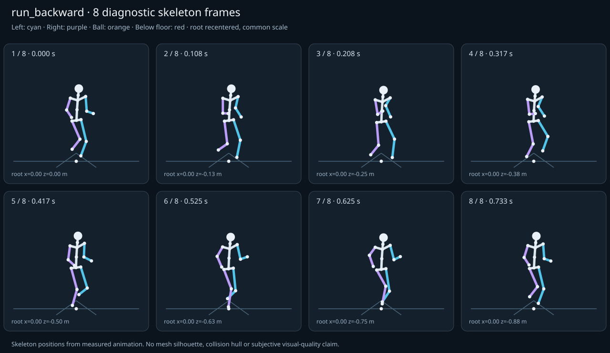

כל הקליפים · תצוגת התנועה · JSON המקור
ציון 93.8 · כיסוי 100%
הסוליות נמדדות בתרחיש תנועה חיצוני מוצהר; Root בנכס נשאר קבוע. הרציפות משתמשת בפוזה המקומית.

| מדד | מצב | ערך | ציון | ראיות |
|---|---|---|---|---|
| החלקת רגליים | ירוק | 0.00008 | 99.84 | ראיות מקוריות{
"coordinateSpace": "native GLB plus explicitly declared external actor position and heading, applied once",
"supportSource": "declared",
"windows": 3,
"samples": 75,
"maxDriftMeters": 0.000135,
"p95SpeedMetersPerSecond": 0.012012,
"worst": {
"bone": "RightFoot",
"t": 0.316667,
"start": 0.233333,
"end": 0.526667,
"driftMeters": 0.000135
}
} |
| חדירה לרצפה | ירוק | 0 | 100 | ראיות מקוריות{
"samples": 1820,
"floorY": 0,
"probeKind": "declared sole probes plus skeletal joint centers (no mesh surfaces)",
"maxDepthMeters": 0,
"worst": {
"t": 0,
"bone": "LeftFoot",
"depthMeters": 0,
"y": 0.004
}
} |
| קפיצות פוזה | ירוק | 0.632184 | 87.36 | ראיות מקוריות{
"adjacentPairs": 90,
"observations": 1530,
"maxDegrees60Hz": 5.351618,
"maxMarkerStepHeight60Hz": 0.025287,
"maxRootStepHeight60Hz": 0.011834,
"worst": {
"ratio": 0.6321837859453067,
"t": 0.4,
"previousTime": 0.391667,
"bone": "LeftFoot",
"markerStepHeight60Hz": 0.025287,
"degrees60Hz": 4.205375
}
} |
| חריגות אנטומיות | ירוק | 0 | 100 | ראיות מקוריות{
"testedFrames": 91,
"affectedFrames": 0,
"checks": 1547,
"maxLimbFlexionDegrees": 97.486783,
"maxRelativeSegmentLengthChange": 0,
"hingeDirectionChecked": true,
"axialTwistChecked": false,
"violations": []
} |
| מגע בכדור | לא חל | — | — | ראיות מקוריות{} |
| כניסה ויציאה מול המתנה | צהוב | 1.705123 | 69.42 | ראיות מקוריות{
"entry": {
"ratio": 1.7051224829169038,
"t": 0,
"idleTime": 3.866667,
"markers": 17,
"rmsPositionHeight": 0.068205,
"rmsRotationDegrees": 23.801223,
"rmsVelocityHeightPerSecond": 0.696403,
"velocityEvaluated": true
},
"exit": {
"ratio": 1.7051225903283278,
"t": 0.733333,
"idleTime": 3.866667,
"markers": 17,
"rmsPositionHeight": 0.068205,
"rmsRotationDegrees": 23.801224,
"rmsVelocityHeightPerSecond": 0.617563,
"velocityEvaluated": true
},
"worstEndpoint": "exit",
"alignment": "horizontal root translation; raw asset poses used when provided"
} |
| מהירות גוף מול צעדים | ירוק | 0.000181 | 99.98 | ראיות מקוריות{
"rootSource": "sampled presented root",
"rootSpeedMetersPerSecond": 1.2,
"observedRootSpeedMetersPerSecond": 1.2,
"referenceRootSpeedMetersPerSecond": 1.2,
"supportSource": "declared",
"backwardSweepSpeedMetersPerSecond": 1.199783,
"cadenceStepsPerSecond": 4.090909,
"impliedStrideMeters": 0.586561,
"rootStrideMeters": 0.586667,
"supportSweeps": [
{
"bone": "LeftFoot",
"start": 0,
"end": 0.16,
"duration": 0.16,
"sweepMeters": 0.191936,
"speedMetersPerSecond": 1.199603
},
{
"bone": "LeftFoot",
"start": 0.6,
"end": 0.733333,
"duration": 0.133333,
"sweepMeters": 0.16,
"speedMetersPerSecond": 1.2
},
{
"bone": "RightFoot",
"start": 0.233333,
"end": 0.526667,
"duration": 0.293333,
"sweepMeters": 0.351936,
"speedMetersPerSecond": 1.199783
}
]
} |
| סימטריה | ירוק | 0 | 100 | ראיות מקוריות{
"mode": "gait",
"modeSource": "declared",
"structuralMismatch": 0,
"segments": [
{
"segment": "Arm-ForeArm",
"mismatch": 0
},
{
"segment": "ForeArm-Hand",
"mismatch": 0
},
{
"segment": "UpLeg-Leg",
"mismatch": 0
},
{
"segment": "Leg-Foot",
"mismatch": 0
}
],
"motionRmsHeight": 0,
"worstMotion": {
"t": 0.333333,
"errorHeight": 0
},
"bilateralPoseRmsHeightUnscored": 0.13265,
"note": "Motion is mirrored in a pelvis-centred body basis."
} |